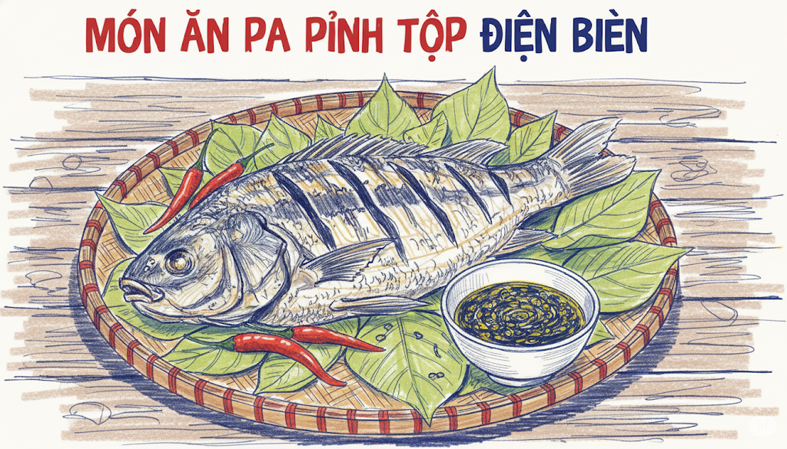
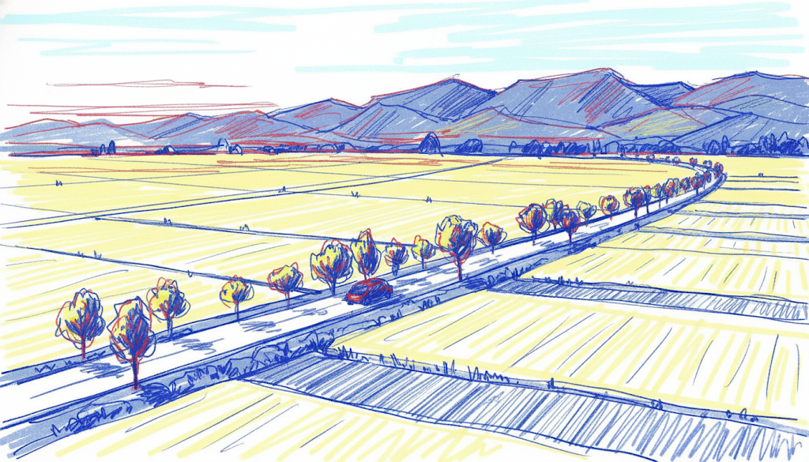
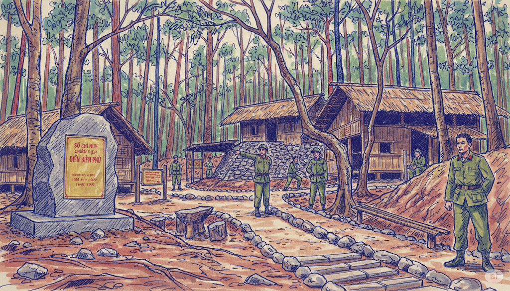
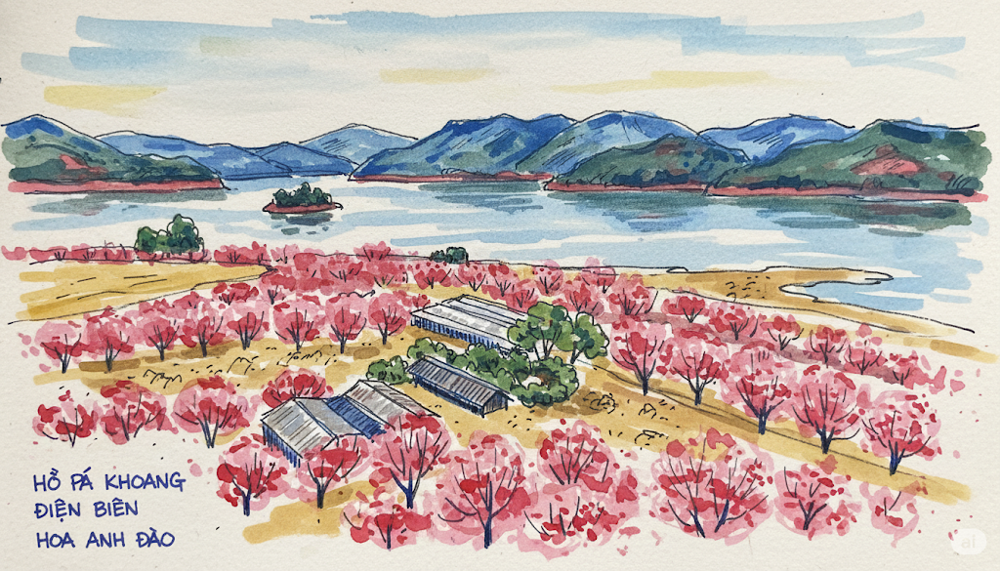
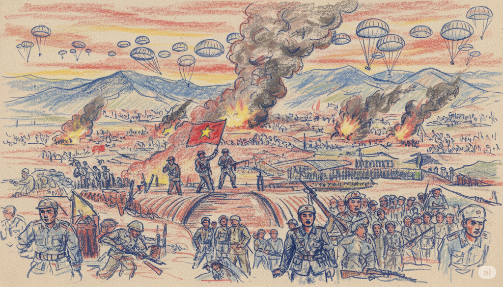
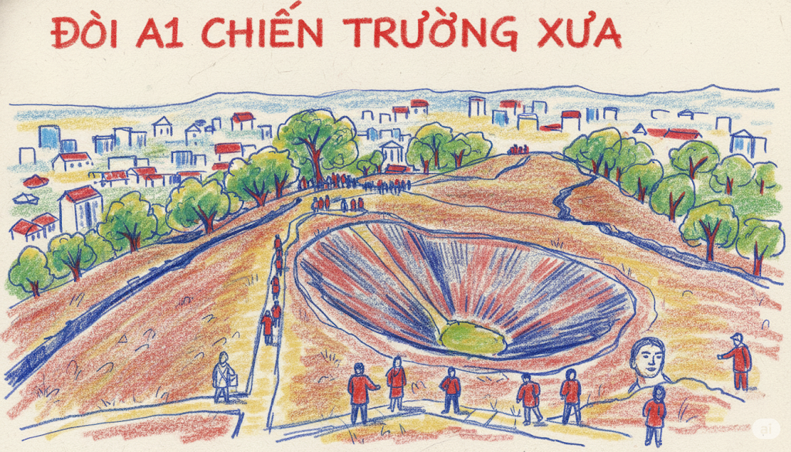
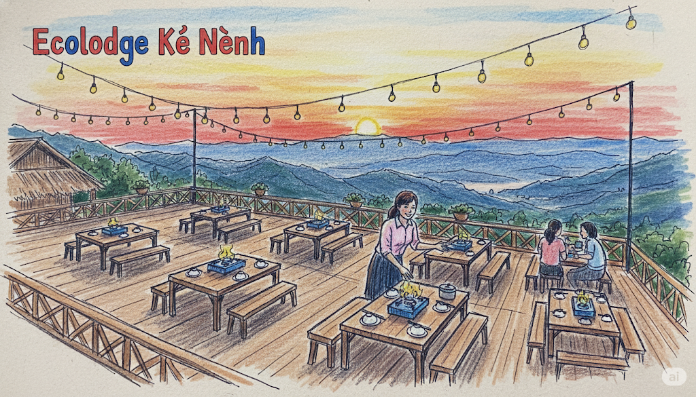
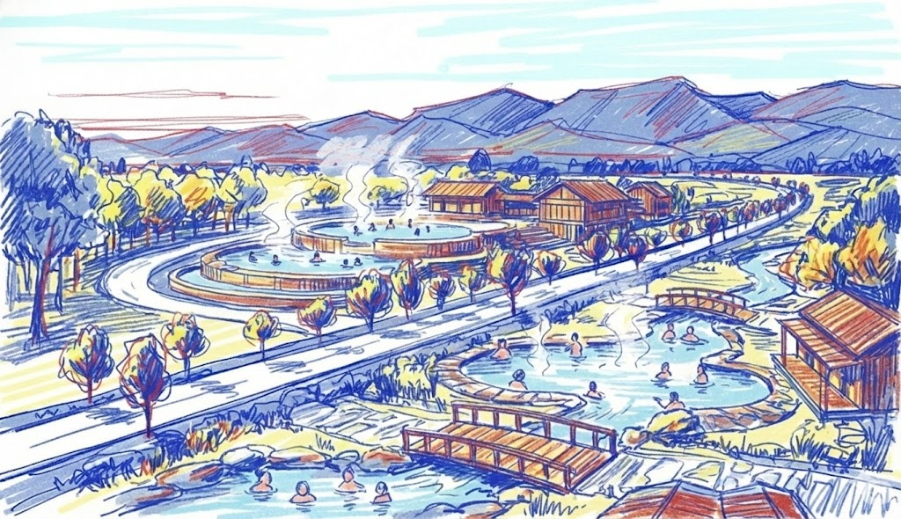
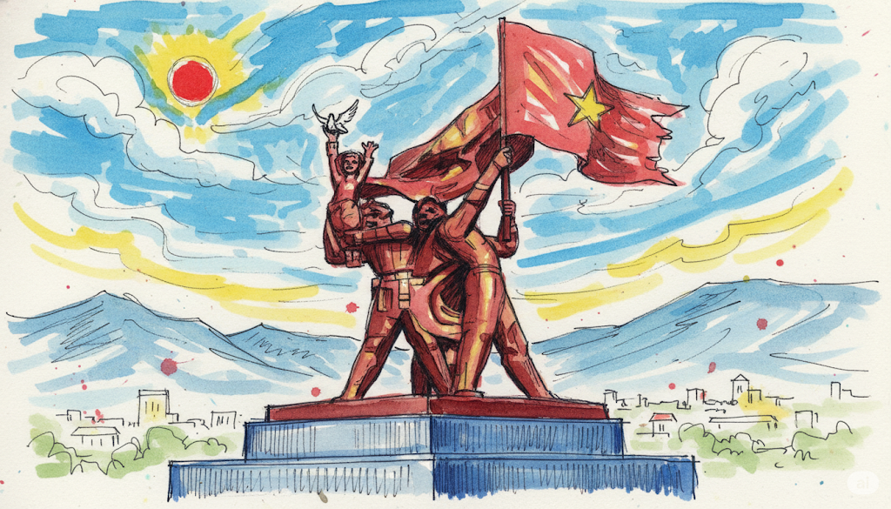

Title
Time & Location
Giới thiệu
...
Giai thoại & Câu chuyện
...
Dữ kiện lịch sử
...
Lời khuyên của thổ địa
...
Hành trình Lịch sử & Thư giãn

Trải nghiệm văn hóa Thái bản địa với nhà sàn truyền thống, ẩm thực đặc sắc, rượu cần và điệu múa Xòe - Di sản văn hóa phi vật thể của nhân loại.

Vựa lúa lớn nhất Tây Bắc, được mệnh danh "Nhất Thanh". Đón bình minh giữa biển lúa bao la, sương mù giăng trên cánh đồng tạo nên khung cảnh thơ mộng.

Căn cứ chỉ huy chiến dịch lịch sử trong rừng già nguyên sinh, nơi Đại tướng Võ Nguyên Giáp đưa ra quyết định "Đánh chắc, tiến chắc" - bước ngoặt quan trọng dẫn đến chiến thắng.

Hồ nước rộng lớn giữa thiên nhiên hùng vĩ, có đảo hoa anh đào nở rộ. Trải nghiệm đi thuyền kayak, ngắm núi non bao quanh và không khí trong lành của vùng cao.

Nơi lưu giữ ký ức hào hùng của dân tộc. Điểm nhấn là bức tranh Panorama khổng lồ diện tích hơn 3.000m² tái hiện 4.500 nhân vật và toàn cảnh chiến dịch lịch sử.

Cứ điểm kiên cố nhất của Pháp với hầm ngầm phức tạp và hố bộc phá 960kg - hiệu lệnh tổng công kích đêm 6/5/1954. Nơi chứng kiến những trận chiến ác liệt nhất.

Khu nghỉ dưỡng sinh thái với view panorama tuyệt đẹp nhìn xuống thung lũng Mường Thanh. Thời điểm vàng để check-in và thưởng thức cafe khi mặt trời lặn sau núi.

Nước khoáng nóng tự nhiên từ lòng đất, nhiệt độ ấm áp quanh năm, chứa khoáng chất tốt cho da và sức khỏe. Trải nghiệm thư giãn hoàn hảo giữa thiên nhiên núi rừng.

Biểu tượng uy nghiêm của chiến thắng trên đỉnh đồi D1, khắc họa 3 chiến sĩ trên nóc hầm De Castries. View toàn cảnh thành phố và thung lũng cực kỳ ấn tượng.
Time & Location
...
...
...
...